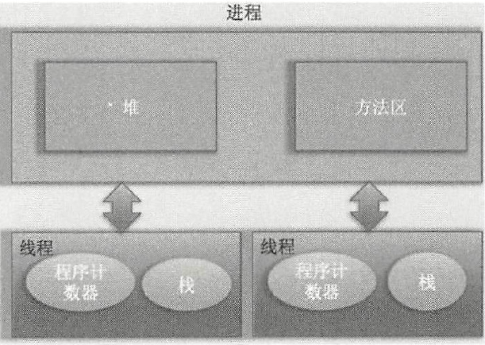
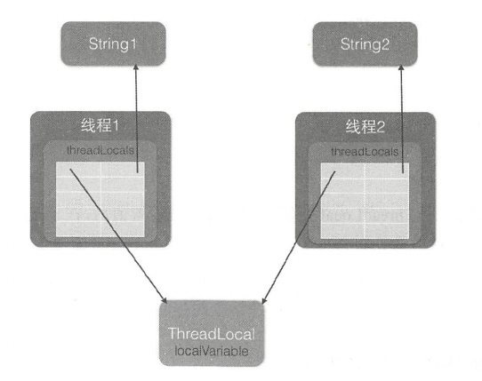

并发编程线程基础
什么是线程
操作系统在分配资源时是把资源分配给进程的,但是CPU资源比较特殊,它是被分配到线程的,因为真正要占用CPU运行的是线程,所以也说线程是CPU分配的基本单位。
在Java中,当我们启动main函数时其实就启动了一个jvm的进程,而main函数所在的线程就是这个进程中的一个线程,也称主线程。

程序计数器（私有）
- 执行的是native方法,那么pc计数器记录的是undefined地址
- 执行的是Java代码时pc计数器记录的才是下一条指令的地址
栈资源（私有）
- 存储该线程的局部变量
- 存放线程的调用技帧
堆（共有）
- 存放使用new操作创建的对象实例
方法区（共有）
- 存放JVM加载的类、常量及静态变量
线程创建与运行
继承重写run
/**
*@authorzhangkx
*/
public class ThreadTest{
//继承Thread类并且重新run方法
public static class MyThread extends Thread{
@Override
public void run(){
System.out.println("imchild!");
}
}
public static void main(String[]args){
MyThread thread=new MyThread();
thread.start();
}
}优点：在run()方法内获取当前线程直接使用this就可以了,无须使用Thread.currentThread()方法。
缺点：
- Java不支持多继承,如果继承了Thread类,那么就不能再继承其他类。
- 另外任务与代码没有分离,当多个线程执行一样的任务时需要多份任务代码,而Runable则没有这个限制。
接口实现run
/**
*@authorzhangkx
*/
public class ThreadTest{
public static class RunableTask implements Runnable{
@Override
public void run(){
System.out.println("imchild!");
}
}
public static void main(String[]args){
RunableTask task=new RunableTask();
new Thread(task).start();
new Thread(task).start();
}
}
优点：
- 两个线程共用一个task代码逻辑,如果需要,可以给RunableTask添加参数进行任务区分。
- RunableTask可以继承其他类。
缺点：没有返回值
实现FutureTask
importjava.util.concurrent.Callable;
importjava.util.concurrent.Future;
importjava.util.concurrent.FutureTask;
/**
*@authorzhangkx
*/
public class ThreadTest{
public static class CallerTask implements Callable<String>{
@Override
public String call() throws Exception{
return"hello";
}
}
public static void main(String[]args)throws InterruptedException{
FutureTask<String> futureTask=new FutureTask<String>(newCallerTask());
new Thread(futureTask).start();
try{
String result=futureTask.get();
System.out.println(result);
}catch(Exception e){
e.printStackTrace();
}
}
}小结
使用继承方式的好处是方便传参,你可以在子类里面添加成员变量,通过set方法设置参数或者通过构造函数进行传递,而如果使用Runnable方式,则只能使用主线程里面被声明为final的变量。不好的地方是Java不支持多继承,如果继承了Thread类,那么子类不能再继承其他类,而Runable则没有这个限制。前两种方式都没办法拿到任务的返回结果,但是Futuretask方式可以。
线程通知与等待
Java中的Object是所有类的父类,鉴于继承机制,Java把所有类都需要的方法放到了Object类里面,其中就包含本节要讲的通知与等待系列函数。
wait()函数
当一个线程调用一个共享变量的wait()方法时,该调用线程会被阻塞挂起,直到发生下面几件事情之一才返回
- 其他线程调用了该共享对象的
notify()或者notifyAll()方法; - 其他线程调用了该线程的
interrupt()方法,该线程抛出InterruptedException异常返回。
注意:如果调用wait()方法的线程没有事先获取该对象的监视器锁,则调用wait()方法时调用线程会抛出IllegalMonitorStateException异常。
监视器锁:
1.执行
synchronized同步代码块时,使用该共享变量作为参数。synchronized(共享变量){ //dosomething }2.调用该共享变量的方法,并且该方法使用了
synchronized修饰。synchronized void add(int a,int b){ //dosomething }
还要注意虚假唤醒，对于虚假唤醒，我们可以不停的去测试该线程被唤醒的条件是否满足,不满足则继续等待,也就是说在一个循环中调用wait()方法进行防范。这就是我们一般使用while中调用wait()的原因。
虚假唤醒:
一个线程可以从挂起状态变为可以运行状态(也就是被唤醒),即使该线程没有被其他线程调用
notify()、notifyAll()方法进行通知,或者被中断,或者等待超时.
synchronized (obj){
while (条件不满足){
obj.wait();
}
}wait(long timeout)函数
该方法相比wait()方法多了一个超时参数,它的不同之处在于,如果一个线程调用共享对象的该方法挂起后,没有在指定的time out时间内被其他线程调用该共享变量的notify()或者notifyAll()方法唤醒,那么该函数还是会因为超时而返回。如果将timeout设置为0则和wait方法效果一样,因为在wait方法内部就是调用了wait(0)。需要注意的是,如果在调用该函数时,传递了一个负的timeout则会抛出IllegalArgumentException异常。
wait(long timeout,int nanos)函数
在其内部调用的是wait(long timeout)函数,只有在nanos>0时才使参数timeout递增1。
notify()函数
一个线程调用共享对象的notify()方法后,会唤醒一个在该共享变量上调用wait系列方法后被挂起的线程。一个共享变量上可能会有多个线程在等待,具体唤醒哪个等待的线程是随机的。此外,被唤醒的线程不能马上从wait方法返回并继续执行,它必须在获取了共享对象的监视器锁后才可以返回也就是唤醒它的线程释放了共享变量上的监视器锁后,被唤醒的线程也不一定会获取到共享对象的监视器锁,这是因为该线程还需要和其他线程一起竞争该锁，只有该线程竞争到了共享变量的监视器锁后才可以继续执行。类似wait系列方法,只有当前线程获取到了共享变量的监视器锁后,才可以调用共享变量的notify()方法,否则会抛出illegalMonitorStateException异常。
notifyAll()函数
不同于在共享变量上调用notify()函数会唤醒被阻塞到该共享变量上的一个线程,notifyAll()方法则会唤醒所有在该共享变量上由于调用wait系列方法而被挂起的线程。
线程控制方法
join方法
Thread类中有一个join方法：等待某几件事情完成后才能继续往下执行,比如多个线程加载资源,需要等待多个线程全部加载完毕再汇总处理。
当调用join时，终止当前的线程，等待调用join的线程死亡，再继续进行。
sleep方法
Thread类中有一个静态的sleep方法,当一个执行中的线程调用了Thread的sleep方法后,调用线程会暂时让出指定时间的执行权,也就是在这期间不参与CPU的调度,但是该线程所拥有的监视器资源,比如锁还是持有不让出的。指定的睡眠时间到了后该函数会正常返回,线程就处于就绪状态,然后参与CPU的调度,获取到CPU资源后就可以继续运行了。如果在睡眠期间其他线程调用了该线程的interrupt()方法中断了该线程,则该线程会在调用sleep方法的地方抛出InterruptedException异常而返回。
线程在睡眠时拥有的监视器资源不会被释放。
yield 方法
Thread类中有一个静态的yield方法,当一个线程调用yield方法时,实际就是在暗示线程调度器当前线程请求让出自己的CPU使用,但是线程调度器可以无条件忽略这个暗示。我们知道操作系统是为每个线程分配一个时间片来占有CPU的,正常情况下当一个线程把分配给自己的时间片使用完后,线程调度器才会进行下一轮的线程调度,而当一个线程调用了Thread类的静态方法yield时,是在告诉线程调度器自己占有的时间片中还没有使用完的部分自己不想使用了,这暗示线程调度器现在就可以进行下一轮的线程调度。当一个线程调用yield方法时,当前线程会让出CPU使用权,然后处于就绪状态,线程调度器会从线程就绪队列里面获取一个线程优先级最高的线程,当然也有可能会调度到刚刚让出CPU的那个线程来获取CPU执行权。
小结
sleep与yield方法的区别在于,当线程调用sleep方法时调用线程会被阻塞挂起指定的时间,在这期间线程调度器不会去调度该线程（缺少监视器资源）。而调用yield方法时,线程只是让出自己剩余的时间片,并没有被阻塞挂起,而是处于就绪状态,线程调度器下一次调度时就有可能调度到当前线程执行。
线程中断
Java中的线程中断是一种线程间的协作模式,通过设置线程的中断标志并不能直接终止该线程的执行,而是被中断的线程根据中断状态自行处理。
- void interrupt()方法:中断线程,例如,当线程A运行时,线程B可以调用线程A的interrupt()方法来设置线程A的中断标志为true并立即返回。设置标志仅仅是设置标志,线程A实际并没有被中断,它会继续往下执行。如果线程A因为调用了wait系列函数、join方法或者sleep方法而被阻塞挂起,这时候若线程B调用线程A的
interrupt()方法,线程A会在调用这些方法的地方抛出InterruptedException异常而返回。 - boolean isInterrupted()方法:检测当前线程是否被中断,如果是返回true,否则返回false
- static boolean interrupted()方法:检测当前线程是否被中断,如果是返回true,否则返回false。与
islnterrupted()不同的是,该方法如果发现当前线程被中断,则会清除中断标志,并且该方法是static方法,可以通过Thread类直接调用。在interrupted()内部是获取当前调用线程的中断标志而不是调用interrupted()方法的实例对象的中断标志。
看如下这个代码：
public static void main(String[] args) throws InterruptedException {
Thread threadOne = new Thread(new Runnable() {
@Override
public void run() {
for (; ; ) ;
}
});
//启动线程
threadOne.start();
//设置中断标志
threadOne.interrupt();
//获取中断标志
System.out.println("isInterrupted" + threadOne.isInterrupted());
System.out.println("isInterrupted" + threadOne.interrupted());
System.out.println("isInterrupted" + Thread.interrupted());
System.out.println("isInterrupted" + threadOne.isInterrupted());
threadOne.join();
System.out.println("main thread is over");
}输出的结果是：true false false true
在interrupted()方法内部是获取当前线程的中断状态,这里虽然调用了threadOne的interrupted()方法,但是获取的是主线程的中断标志,因为主线程是当前线程。threadOne.interrupted()和Thread.interrupted()方法的作用是一样的,目的都是获取当前线程的中断标志。
线程上下文切换
在多线程编程中,线程个数一般都大于CPU个数,而每个CPU同一时刻只能被一个线程使用,为了让用户感觉多个线程是在同时执行的,CPU资源的分配采用了时间片轮转的策略,也就是给每个线程分配一个时间片,线程在时间片内占用CPU执行任务。当前线程使用完时间片后,就会处于就绪状态并让出CPU让其他线程占用,这就是上下文切换,从当前线程的上下文切换到了其他线程。
那么就有一个问题,让出CPU的线程等下次轮到自己占有CPU时如何知道自己之前运行到哪里了?所以在切换线程上下文时需要保存当前线程的执行现场,当再次执行时根据保存的执行现场信息恢复执行现场。
线程上下文切换时机有:当前线程的CPU时间片使用完处于就绪状态时,当前线程被其他线程中断时。
线程死锁
原因
互斥、请求并持有、不可剥夺、环路等待
避免
只需要破坏掉至少一个构造死锁的必要条件即可，最简单的是破坏请求并持有和环路等待条件。
守护线程与用户线程
Java中的线程分为两类,分别为daemon线程(守护线程〉和user线程(用户线程)。在JVM启动时会调用main函数,main函数所在的钱程就是一个用户线程,其实在JVM内部同时-还启动了好多守护线程,比如垃圾回收线程。那么守护线程和用户线程有什么区别呢?区别之一是当最后一个非守护线程结束时,JVM会正常退出,而不管当前是否有守护线程,也就是说守护线程是否结束并不影响JVM的退出。言外之意,只要有一个用户线程还没结束,正常情况下JVM就不会退出。
- 守护线程的唯一用途就是告诉JVM不需要等待它退出，当JVM中所有的线程都是守护线程的时候就可以正常的退出了
- 普通线程不一样，JVM必须等待它的退出才可以正常的退出。
ThreadLocal
多线程访问同一个共享变量时特别容易出现并发问题,特别是在多个线程需要对一个共享变量进行写入时。为了保证线程安全,一般使用者在访问共享变量时需要进行适当的同步,同步的措施一般是加锁,这就需要使用者对锁有一定的了解,这显然加重了使用者的负担。那么有没有一种方式可以做到,当创建一个变量后,每个线程对其进行访问的时候访问的是自己线程的变量呢?其实ThreadLocal就可以做这件事情,虽然ThreadLocal并不是为了解决这个问题而出现的。
ThreadLocal是JDK包提供的,它提供了线程本地变量,也就是如果你创建了一个ThreadLocal变量,那么访问这个变量的每个线程都会有这个变量的一个本地副本。当多个线程操作这个变量时,实际操作的是自己本地内存里面的变量,从而避免了线程安全问题。创建一个ThreadLocal变量后,每个线程都会复制一个变量到自己的本地内存。
Threadlocal 的实现原理

由该图可知,Thread类中有一个threadLocals和一个inheritableThreadLocals,它们都是ThreadLocalMap类型的变量,而ThreadLocalMap是一个定制化的Hashmap。在默认情况下,每个线程中的这两个变量都为null,只有当前线程第一次调用ThreadLocal的set或者get方法时才会创建它们。其实每个线程的本地变量不是存放在ThreadLocal实例里面,而是存放在调用线程的threadLocals变量里面。也就是说,ThreadLocal类型的本地变量存放在具体的线程内存空间中。ThreadLocal就是一个工具壳,它通过set方法把value值放入调用线程的threadLocals里面并存放起来,当调用线程调用它的get方法时,再从当前线程的threadLocals变量里面将其拿出来使用。如果调用线程一直不终止,那么这个本地变量会一直存放在调用线程的threadLocals变量里面,所以当不需要使用本地变量时可以通过调用ThreadLocal变量的remove方法,从当前线程的threadLocals里面删除该本地变量。另外,Thread里面的threadLocals为何被设计为map结构?很明显是因为每个线程可以关联多个ThreadLocal变量。

在每个线程内部都有一个名为threadLocals的成员变量,该变量的类型为HashMap,其中key为我们定义的hreadLocal变量的this引用,value则为我们使用set方法设置的值。每个线程的本地变量存放在线程自己的内存变量threadLocals中,如果当前线程一直不消亡,那么这些本地变量会一直存在,所以可能会造成内存溢出,因此使用完毕后要记得调用ThreadLocal的remove方法删除对应线程的threadLocals中的本地变量。ThreadLocalRandom,就是借鉴ThreadLocal的思想实现的,后面会具体讲解。
Threadlocal不支持继承性
同一个ThreadLocal变量在父线程中被设置值后,在子线程中是获取不到的。根据上节的介绍,这应该是正常现象,因为在子线程thread里面调用get方法时当前线程为thread线程,而这里调用set方法设置线程变量的是main线程,两者是不同的线程,自然子线程访问时返回null。那么有没有办法让子线程能访问到父线程中的值?答案是有。
InheritableThreadLocal类
为了解决上节提出的问题,InheritableThreadLocal应运而生。InheritableThreadLocal继承自ThreadLocal,其提供了一个特性,就是让子线程可以访问在父线程中设置的本地变量。
package java.lang;
import java.lang.ref.*;
public class InheritableThreadLocal<T> extends ThreadLocal<T> {
public InheritableThreadLocal() {}
protected T childValue(T parentValue) {
return parentValue;
}
ThreadLocalMap getMap(Thread t) {
return t.inheritableThreadLocals;
}
void createMap(Thread t, T firstValue) {
t.inheritableThreadLocals = new ThreadLocalMap(this, firstValue);
}
}看源码，最关键是复写了ThreadLocal中的getMap和createMap。
在构造Thread的时候，会调用init方法，该方法中有一步为：
if (inheritThreadLocals && parent.inheritableThreadLocals != null)
this.inheritableThreadLocals =
ThreadLocal.createInheritedMap(parent.inheritableThreadLocals);可以看出，在构造Thread会先看看父线程是否有inheritThreadLocals。而inheritThreadLocals就已经复写了关键Map，自然可以在子类中继承父类。
复写的时候调用的inheritableThreadLocals就是返回一个新的ThreadLocals
小结
InheritableThreadLocal类通过重写代码让本地变量保存到了具体线程的inheritableThreadLocals变量里面,那么线程在通过InheritableThreadLocal类实例的set或者get方法设置变量时,就会创建当前线程的inheritableThreadLocals变量。当父线程创建子线程时,构造函数会把父线程中inheritableThreadLocals变量里面的本地变量复制一份保存到子线程的inheritableThreadLocals变量里面。可见,现在可以从子线程正常获取到线程变量的值了。
那么在什么情况下需要子线程可以获取父线程的threadlocal变量呢?情况还是蛮多的,比如子线程需要使用存放在threadlocal变量中的用户登录信息,再比如一些中间件需要把统一的id追踪的整个调用链路记录下来。其实子线程使用父线程中的threadlocal方法有多种方式,比如创建线程时传入父线程中的变量,并将其复制到子线程中,或者在父线程中构造一个map作为参数传递给子线程,但是这些都改变了我们的使用习惯,所以在这些情况下InheritabIeThreadLocal就显得比较有用。